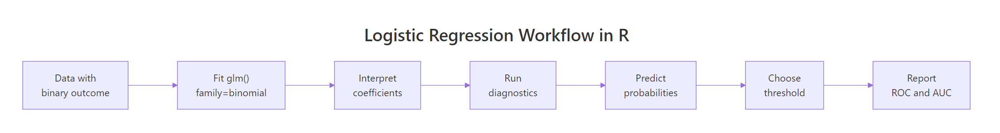
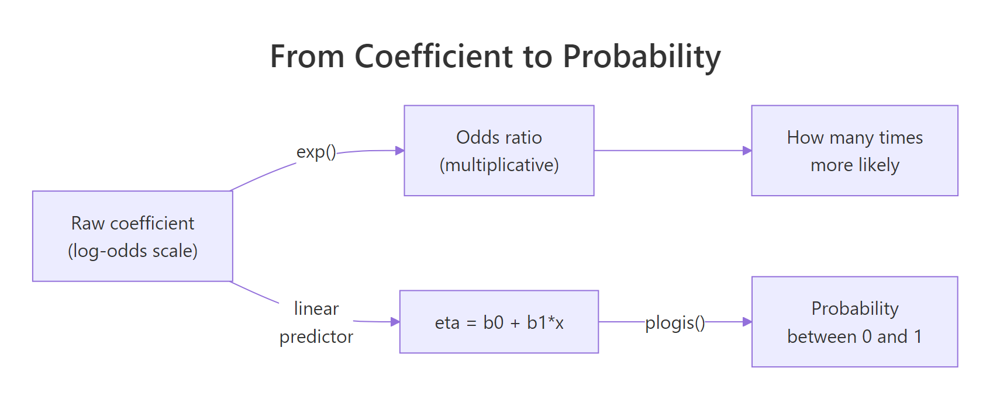
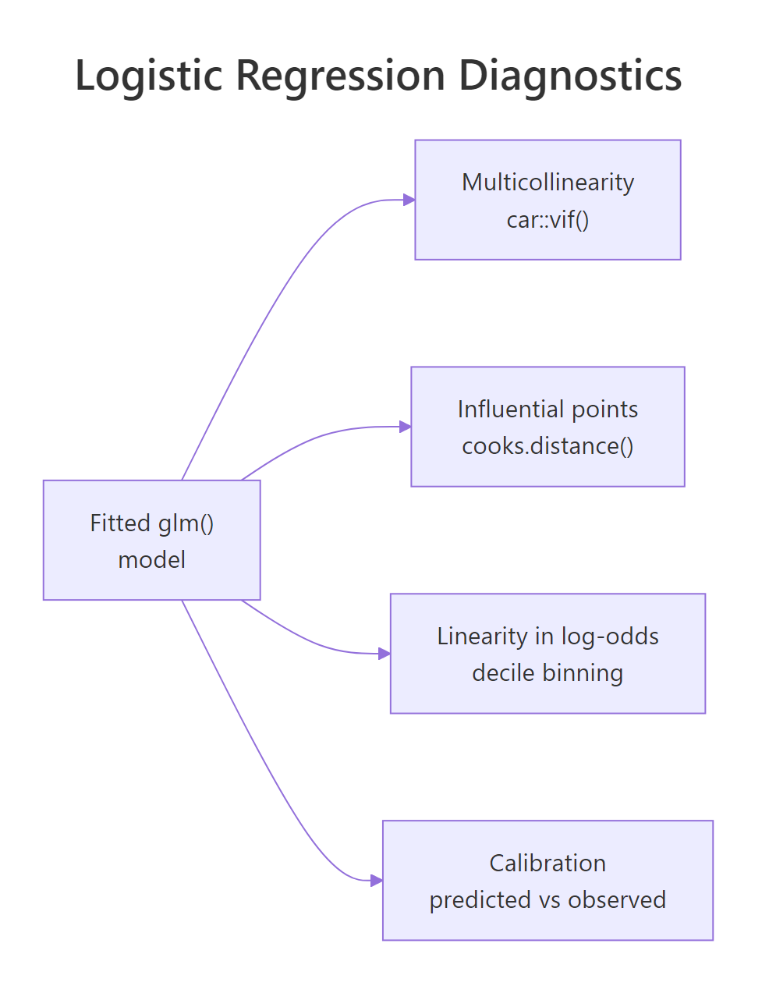

Logistic Regression in R: Complete Guide with Diagnostics & Interpretation
Logistic regression models the probability of a yes/no outcome by fitting an S-curve to your data. In R, a single glm(y ~ x, family = binomial) call gives you a fitted model, and this guide walks through the harder work that comes next: reading diagnostics, turning coefficients into odds ratios and probabilities, choosing a sensible threshold, and avoiding the mistakes that quietly wreck most analyses.
How do you fit a logistic regression in R with glm()?
The workhorse for logistic regression in R is glm() with family = binomial. We will use the built-in mtcars dataset and predict am (1 = manual transmission, 0 = automatic) from car weight and horsepower, since both are intuitive and well known. Fitting the model is one line. Reading what comes back is where the actual learning starts, so we do that next.
The summary() output has three things you should always look at first. The Coefficients table shows each predictor on the log-odds scale (we will translate that to odds ratios in the next section). The z-values and Pr(>|z|) columns tell you which predictors are statistically distinguishable from zero, and here both wt and hp matter. The null deviance (43.23) is how badly an intercept-only model fits, and the residual deviance (10.06) is how badly your fitted model fits. A big drop is a good sign, and the gap is what powers the likelihood-ratio test for overall model significance.

Figure 1: End-to-end logistic regression workflow in R.
The workflow above is the path the rest of this article walks. Fit, interpret, diagnose, predict, threshold, evaluate. None of those steps is optional in serious work, even though most online tutorials stop at "fit".
Try it: Fit a single-predictor logistic regression of am on mpg only and check the sign of the mpg coefficient. Does higher fuel economy push the prediction toward manual or automatic?
Click to reveal solution
Explanation: The mpg coefficient is positive (0.307), which means cars with higher fuel economy are more likely to be manual transmissions in this sample. That matches intuition for the era of mtcars (1973–74), where lighter, more fuel-efficient cars tended to come with manual gearboxes.
How do you interpret logistic regression coefficients?
A logistic regression coefficient is on the log-odds scale, which is unintuitive. The fix is to exponentiate it: exp(coefficient) gives the odds ratio, the multiplicative change in odds for a one-unit change in the predictor. From there you can translate any combination of predictor values into a predicted probability via the logistic (a.k.a. inverse-logit) function plogis().

Figure 2: From log-odds to odds ratio to predicted probability.
The cleanest way to get odds ratios with confidence intervals is broom::tidy() with exponentiate = TRUE. It returns a tidy data frame you can pipe straight into ggplot.
The numeric scale changes everything. The intercept's huge number is the baseline odds when wt and hp are both zero, which is nonsense in this dataset, so ignore it. The interesting rows are wt and hp. The wt odds ratio of 0.0003 means that a one-unit (1000 lb) increase in weight multiplies the odds of being manual by about 0.0003, which is a brutal collapse. The hp odds ratio of 1.04 means each additional horsepower nudges the odds upward by 4 percent. Heavy cars favour automatic transmissions, more powerful cars favour manuals, holding the other variable fixed.
Probabilities are what you actually report to decision-makers, and predict(fit, type = "response") gives them directly. You can ask the model what the probability of manual is for cars with specific values.
Holding hp fixed at 110, a 2,000-lb car has a 99.9% predicted probability of being manual, a 3,200-lb car sits near the 50/50 decision boundary, and a 4,500-lb car has essentially zero probability of being manual. Notice the second column shows the same numbers from the linear predictor passed through plogis(), which is just 1 / (1 + exp(-eta)). That equivalence is the whole logistic-regression trick: a linear model in log-odds space, an S-curve in probability space.
exp(cbind(OR = coef(fit), confint(fit))), but the tidy version returns a data frame, supports ggplot2, and adds p-values automatically.Try it: The raw hp coefficient from fit1 is roughly 0.0363 on the log-odds scale. Compute its odds ratio by hand using exp() and verify it matches the or_table value.
Click to reveal solution
Explanation: coef(fit1)["hp"] extracts the raw log-odds coefficient (0.0363), and exp() converts it to the odds ratio (1.037). Each extra horsepower multiplies the odds of manual by 1.037, or +3.7%.
What diagnostics check that the model is sound?
Even a model with significant p-values can be wrong. Logistic regression has four diagnostic checks that catch the failures most beginners ship to production: multicollinearity (correlated predictors that destabilise coefficients), influential points (single rows that move the fit), linearity in the log-odds (the only assumption logistic actually has on continuous predictors), and calibration (do predicted probabilities match observed frequencies).

Figure 3: The four diagnostics every logistic regression should pass.
Start with multicollinearity. If two predictors carry almost the same information, their coefficients become unstable and uninterpretable, even when overall model fit looks fine. The variance inflation factor (VIF) is the standard check, and car::vif() works on glm objects.
Both VIFs are 1.77, which is fine. The rule of thumb is VIF below 5 is healthy, between 5 and 10 is a yellow flag, and above 10 means a predictor is essentially redundant with another. The two values here are identical because there are only two predictors, so they share the same pairwise correlation; with three or more predictors each gets its own number.
Next, check for influential points using Cook's distance and deviance residuals. A high Cook's distance flags rows whose removal would meaningfully change the fitted coefficients.
The Maserati Bora is the standout influence point with a Cook's distance of 0.73, well above the soft cutoff of 1 but far above the rest of the sample. Its large deviance residual confirms the model fits it poorly. The right move is to investigate, not delete: the Bora is a heavy (3.57 t) but high-horsepower (335) manual, an unusual combination that contradicts the general pattern.
The third check is linearity in the log-odds. Logistic regression assumes each continuous predictor relates linearly to the log-odds of the outcome. The friendliest visual test is to bin the predictor into deciles, compute the empirical log-odds inside each bin, and plot the result. If it bends, you need a transformation or a spline.
The 4-bin calibration table reads like this: in the lowest probability quartile the model predicted essentially 0% manual and 0% were manual, in the next quartile it predicted 0.4% and again 0% were manual, in the third it predicted 52% and 50% were manual, in the highest it predicted 99.8% and 100% were manual. Predicted and observed frequencies line up almost perfectly across all four bins, which says the model is well calibrated. If you saw the model systematically over-predict in one bin and under-predict in another, that would be the calibration failure to worry about.
car::boxTidwell() on each continuous predictor. It augments the model with x * log(x) interaction terms and tests them. The decile-binning approach above is more intuitive and catches the same problems for most everyday work, so reach for the formal test when you need a publication-grade citation.Try it: Re-fit the model with all four predictors wt + hp + cyl + disp and recompute VIF. Which two variables have the highest VIF, and what does that tell you?
Click to reveal solution
Explanation: cyl and disp both blow past the VIF=10 ceiling, which is unsurprising: in mtcars they correlate at 0.90 because more cylinders implies more displacement. Drop one, combine them, or use a regularised model (glmnet) when this happens.
How do you evaluate predictive performance?
Once you trust the model, you measure how well it predicts. The pipeline is the same in any binary classifier: produce predicted probabilities, choose a classification threshold, build a confusion matrix, and read off accuracy, precision, recall, and ROC/AUC.
The confusion matrix shows 18 true negatives, 12 true positives, 1 false positive, and 1 false negative for an accuracy of 93.8% on the training data. That is encouraging but also a warning sign: training-set accuracy always overstates real-world performance, especially in a 32-row dataset. We will see this lesson again in the common-mistakes section.
A confusion matrix freezes one threshold. The receiver-operating-characteristic (ROC) curve sweeps every possible threshold and plots the true-positive rate against the false-positive rate. The area under the curve, the AUC, summarises the entire tradeoff in one number. AUC of 0.5 is random guessing, 1.0 is perfect separation, and 0.8 or higher is generally considered strong.
AUC of 0.997 means that for almost any random pair of (manual, automatic) cars, the model assigns higher predicted probability to the manual one. That is excellent in absolute terms, though again the small sample makes the number optimistic; on held-out data you should expect noticeably lower.
Try it: Compute precision (positive predictive value) and recall (sensitivity) from the cm05 confusion matrix.
Click to reveal solution
Explanation: With 12 true positives, 1 false positive, and 1 false negative, both precision and recall are 12/13 = 0.923. They will not always match like this; in imbalanced problems they typically diverge sharply, which is why both numbers are reported.
How do you choose the classification threshold?
Threshold 0.5 is a default, not a law. It maximises overall accuracy when classes are balanced and the costs of false positives and false negatives are equal, which is rarely true. Two principled strategies dominate practice. Youden's J maximises sensitivity + specificity − 1 and is the right choice when you want one symmetric, statistically defensible number. Cost-weighted thresholds are the right choice when miss-cost differs sharply, as in disease screening (a missed positive is worse than a false alarm) or fraud detection (a false alarm is cheap, a missed fraud is expensive).
The Youden-optimal threshold is 0.376, lower than 0.5. Lowering the threshold catches the manual car that the 0.5 cutoff missed, taking accuracy from 93.8% to 96.9% and removing the false negative entirely. The Maserati Bora outlier we flagged earlier is the one that was misclassified at 0.5; the optimal threshold finds it.
Try it: Apply a stricter threshold of 0.3 instead of 0.5 and rebuild the confusion matrix.
Click to reveal solution
Explanation: At 0.3 the model picks up the same true positive that Youden's J found, with no extra false positives. In this small dataset thresholds between 0.2 and 0.4 give identical confusion matrices, which is a useful reminder that thresholds are coarse on small samples.
What are the most common logistic regression mistakes?
Five mistakes show up over and over in practice. Knowing them in advance saves a lot of debugging.
1. Perfect separation. When a predictor (or combination of predictors) splits the outcome cleanly, the maximum likelihood estimates blow up to infinity and R prints a glm.fit warning. The coefficients become meaningless even though the fit looks suspiciously good.
The fix is bias-reduced logistic regression (the brglm2 package, brglm() function) or a Bayesian penalised approach. Either keeps the estimates finite and interpretable.
2. Class imbalance ignored. A 90/10 split in the outcome makes accuracy a useless metric: the trivial "always predict the majority" classifier scores 90%. Use AUC, balanced accuracy, or precision/recall depending on the use case.
3. Treating coefficients as probability changes. The coefficient is a log-odds change, not a probability change. The relationship is non-linear, so the same coefficient produces a different probability change at different baseline probabilities. Always report odds ratios and a few example predicted probabilities when communicating results.
4. Evaluating on training data. The 96.9% accuracy we hit above is on the same 32 rows the model was fit on. Held-out test data, k-fold cross-validation, or a proper bootstrap is required for any honest performance number. Optimism on training data is silently catastrophic in production.
5. Rare-category dummies. A categorical predictor with 3 observations in one level produces a dummy variable that the model can fit perfectly to those 3 rows, inflating its coefficient and standard error. Either pool rare categories or drop them.
Try it: Check the class balance of mtcars$am and compute the accuracy of the trivial classifier that always predicts the majority class.
Click to reveal solution
Explanation: The classes split 19/13 (59% automatic, 41% manual), so a trivial "always automatic" classifier hits 59.4%. Our logistic model's 96.9% accuracy is a real improvement over that baseline. On a 90/10 dataset the same comparison would be far more telling.
Practice Exercises
These capstone exercises combine multiple concepts from the tutorial. They use the built-in infert dataset (matched case-control study of secondary infertility) so they run in your browser without any extra packages.
Exercise 1: Fit + odds ratio + VIF on infert
Fit a logistic regression of case (1 = infertile, 0 = control) on age, parity, induced, and spontaneous from the infert dataset. Report the odds ratio with 95% CI for spontaneous, and compute VIF for all four predictors.
Click to reveal solution
Explanation: The spontaneous odds ratio of 3.69 (CI 2.52–5.39) means each additional spontaneous abortion in the patient's history multiplies the odds of being a case by 3.7, controlling for age, parity, and induced abortions. All VIFs are below 1.4, so there is no multicollinearity concern.
Exercise 2: ROC, Youden, balanced accuracy
Using the my_fit model from Exercise 1, compute predicted probabilities, find the Youden-optimal threshold, and compare balanced accuracy at that threshold versus the default 0.5.
Click to reveal solution
Explanation: Lowering the threshold from 0.5 to 0.336 lifts balanced accuracy from 0.665 to 0.737, a meaningful jump. That is because the dataset is imbalanced (83 cases vs 165 controls, roughly 1:2), and 0.5 was leaving too many cases on the wrong side of the cutoff.
Complete Example
A worked end-to-end pipeline on the iris dataset, restricted to two species so the outcome is binary. We classify setosa versus versicolor using Sepal.Length and Petal.Width.
The fit warning fires here because setosa and versicolor are perfectly separable on Petal.Width alone, the textbook example of perfect separation that we covered in the mistakes section. AUC of 1.0 confirms the perfect separation. In practice you would either drop Petal.Width (the offending splitter), use bias-reduced regression via brglm2, or simply recognise that this is the wrong tool for a problem where the classes do not overlap. That is the value of a diagnostics-first workflow: it tells you when to stop, not just how to keep going.
Summary
| Workflow stage | R function | Output |
|---|---|---|
| Fit | glm(y ~ x, family = binomial) |
Fitted glm object |
| Coefficient summary | summary() / broom::tidy() |
Log-odds estimates, p-values |
| Odds ratios | tidy(exponentiate = TRUE, conf.int = TRUE) |
OR + 95% CI |
| Predict | predict(fit, type = "response") |
Probabilities |
| Multicollinearity | car::vif() |
VIF per predictor |
| Influence | cooks.distance(), residuals(type="deviance") |
Per-observation diagnostics |
| Classify | ifelse(probs > threshold, 1, 0) + table() |
Confusion matrix |
| Rank-evaluate | pROC::roc() + auc() |
ROC curve, AUC |
| Pick threshold | pROC::coords(roc, "best") |
Youden-optimal cutoff |
The pattern holds for every binary classification problem you will meet in R. Fit, interpret coefficients on the odds-ratio scale, run all four diagnostics, evaluate with ROC/AUC, choose a threshold for your costs, and stop before the five common mistakes catch you.
References
- R Core Team. Generalised Linear Models,
?glmdocumentation, stats package. Link - Hosmer, D. W., Lemeshow, S., Sturdivant, R. X. Applied Logistic Regression, 3rd Edition. Wiley (2013). Link
- Robin, X. et al. pROC: an open-source package for R and S+ to analyze and compare ROC curves. BMC Bioinformatics (2011). Link
- Fox, J., Weisberg, S. An R Companion to Applied Regression (
carpackage), 3rd Edition. Sage (2019). Link - James, G., Witten, D., Hastie, T., Tibshirani, R. An Introduction to Statistical Learning, 2nd Edition, Chapter 4: Classification. Link
- Robinson, D., Hayes, A., Couch, S.
broom::tidy.glmreference. Link - Albert, A., Anderson, J. A. On the existence of maximum likelihood estimates in logistic regression models. Biometrika 71(1), 1984.
Continue Learning
- Odds Ratios & Relative Risk in R, the sister post on the broader 2x2-table family of metrics, using
epitoolsandepiR. - Linear Regression Assumptions in R, diagnostics for the linear cousin so the contrast with logistic's log-odds linearity is sharp.
- Multicollinearity in R, deeper coverage of VIF, condition numbers, and remedies for collinear predictors.